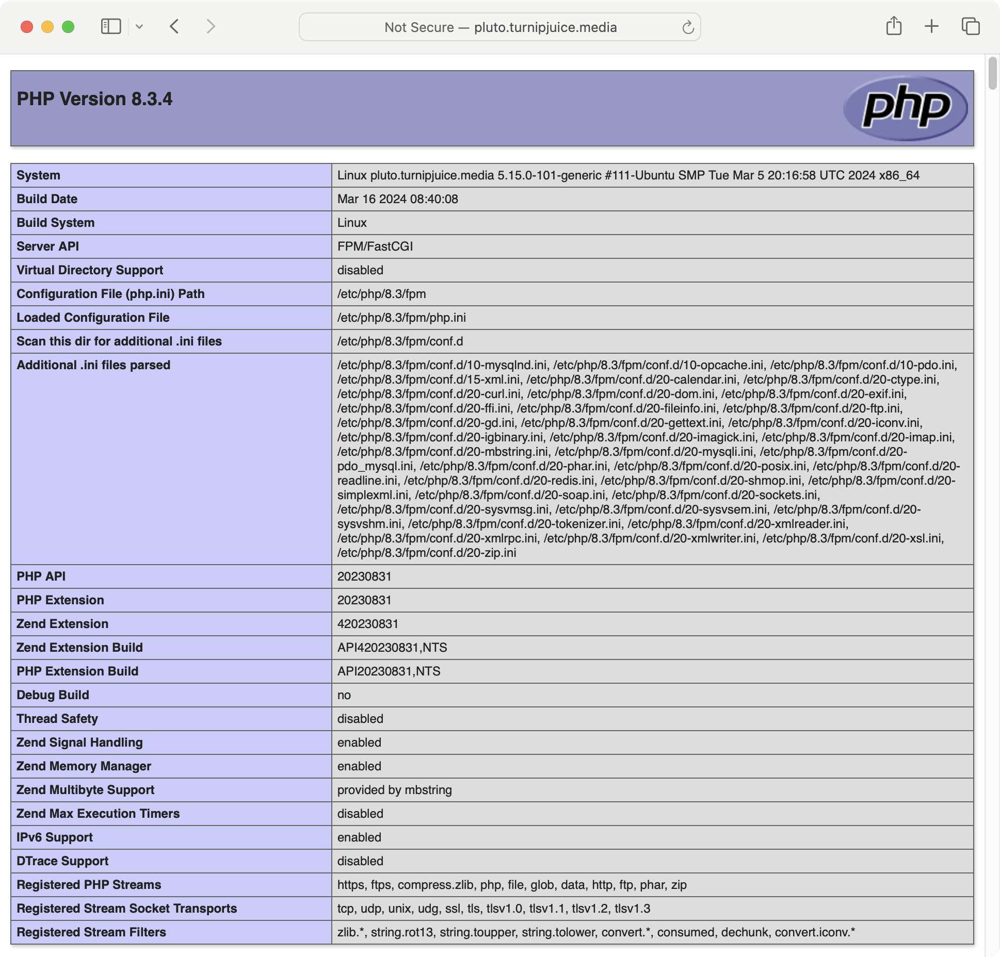
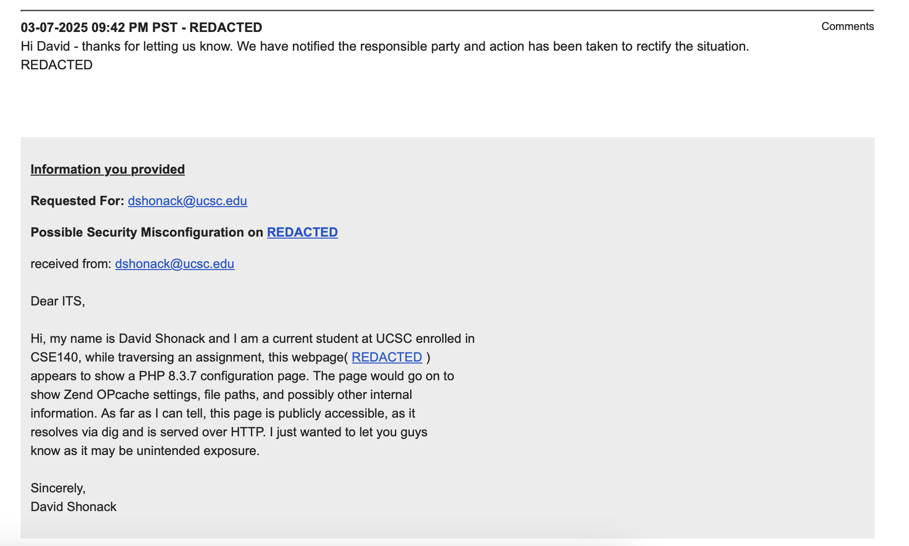

Pac-Man Reinforcement Learning Championship
My team and I were participating in a fun Pac-Man tournament where we would tune our Pac-Man models to essentially defeat other students' Pac-Man. We used a combination of techniques like Q-learning to train our model.
So the professor set up a tournament webpage so that we could view the results of the tournament. I noticed a trend in webpages, for example:ucsc.example/20231204 which was the date of the tournament results. So, being impatient and wanting to know my grade, I decide to try the webpage ucsc.example/20231205 the current day to see the results. And was met with a webpage like this:


Granted the page above is an example, the one I received was many times longer, which included a wealth of information that I really didn't understand the grasp of. So I decided to go check if this webpage was only accessible to me since I was a student. I used dig to check if the domain was publicly accessible, and it resolved an IP address. I was very interested, so I read the page to make sure I wasn't wasting their time and found interesting technologies, directory endpoints, and much more. This is what I sent to ITS.

It might be a bit hard to see, but at the top is the response I received. The feeling of being able to help out and provide value was an invaluable experience. A few days later it was patched, and I was no longer able to see the webpage! This lit a fire in me; I wanted to do this again. Then I stumbled across Bug Bounties.
The Beginning (Domain 1)
After winter quarter I hopped right into learning some of the basics and Burp Suite. Did all of their misconfiguration and API labs. I felt ready to go. I started with a lesser-known domain just to start small and work my way up. The goal was just to learn and absorb how modern web applications work. As I walked through each link and request with Burp, I noticed upon clicking on a login button I received 4 sentry.io responses as I stalled the request. 2 requests were normal, with a content length of 300~, but the next 2 were very interesting, as one had a content length of 200k~ and the other had around 80k~. The responses with high content lengths included a lot of info like JS endpoints, blacklisted countries, etc.
So being kind of new I submitted this as a bug because I thought it was a significant find and possibly a misconfiguration. A response with a content length of 200k is around 160 packets if your MTU is 1500. Which I thought was significant, but I received Although your finding might appear to be a security vulnerability, this behavior does not really pose a concrete and exploitable risk to the platform.
I was a bit bummed because I thought I'd just found my first bug and was thinking it was some huge find, but it taught me that although it may be a misconfiguration, it didn't cause seemingly apparent risk to the platform. Which made sense. So I sharpened up my skills and moved on. Learning from a variety of bug bounty hunters and using their techniques and frameworks on my next domain.
Domain 2
I learned a bunch of new fancy tools like the importance of subdomain recon, nuclei, naabu, sqlmap, and my favorite, Google dorking. With these new tools, I was more confident than ever and ready to tackle my next bounty. This new approach was focused on enumeration. I first Google dorked the target with queries like: site:example.com intext:key
And I found something interesting: it was a file path named example/company-scp a bash script that included functions like build_tunnel(), build_tunnel(),get_ssh_cert(), and BASTION_API definitions. By itselfit just seemed like a script used to establish connection for SCP. So then I decided to see what the main directory looked like, and it was a completely exposed directory path.
Now I got really excited again, so without digging any deeper, I sent a report in, and within hours I got another After careful review, it appears that the behavior described does not have a significant security impact on our platform. Therefore, we will be closing this report as informational.
Once again back to the well, super bummed, but I did get a bit further and realized I was lacking big time. I was following what the people online were doing, the tools they used, and the enumeration strategies. So what was I doing wrong?
Domain 3
Taking my losses, I decided to keep on learning even more, especially from conferences. The odd thing is usually those conference YouTube videos with the fewest views have the best information. So learning many more tricks like DNS history, WAF bypass, or learning how to detect vhosts while also using subdomain lists to brute force 200s, to learning to use Wayback Machine, FOFA, and more tools to increase the attack surface. I decided to run it back with another domain.
I ran my favorite subdomain recon tools, as well as things like VirusTotal, crt.sh, url_scan, and waybackmachine, and ended up with around 40k domains. Now it's important to note there were many, many duplicates, so I had to do lots of data cleaning. Got the unique subdomains and concatenated that with my subfinder domains. Next, I probed each site with httpx to get an idea of the subdomains we found. Next I would go into looking at any interesting responses and go with Burp to inspect deeper. Found a webpage reading 404. The interesting thing here was I received a 404 with a content length of a decent size. Usually when receiving a 404, you'd get header info and maybe an error response, so a decent-sized content length is interesting. Here in the source code, or the response was a weird kind of access token generation if the windows.host was ExampleSite.com. So intuitively I ran the request again with the host header, ExampleSite.com and boom, 200. Now it was a half-finished webpage, and looking at the source, it was obvious that it was for an event in October of 2025. It was a bit odd since no matter what page I traversed, I got the same output. There were also IBM Instana keys located within the webpage. So I submitted my report, and once again, I received a duplicate on my 404 bypass.
The Realization
It hit me right in the face. When I was a kid, I was very successful in sports and won many medals in soccer, basketball, and baseball. I continued to excel throughout high school but wasn't good enough to play in college. Now why does this matter? I'll use an analogy: in sports we are taught to get better at the things we control, like our conditioning, our positioning, footwork, shooting, etc. A crucial piece of sports was being left out on us players. We would blindly listen to coaches and do as they say since they are coaches; it wasn't really asked as to why. But this is where I lacked: I was practicing all these fancy techniques without knowing who I was playing or fighting against. This is half the battle I was missing out on. It's not valid or effective to randomly spray and enumerate. I have to learn who I am playing against, their strengths, their weaknesses, and how they operate in order to effectively compete. Down to the server type up to the front-end frameworks, I'm missing out on so much.Therfore as of right now, I've retired as I continue to learn about popular techs and document them here: Bug_Bounty
Where I will go into labbing WordPress applications, SQL servers, and much more to improve my play.The Beginning (Domain 1)
After winter quarter I hopped right into learning some of the basics and Burp Suite. Did all of their misconfiguration and API labs. I felt ready to go. I started with a lesser-known domain just to start small and work my way up. The goal was just to learn and absorb how modern web applications work. As I walked through each link and request with Burp, I noticed upon clicking on a login button I received 4 sentry.io responses as I stalled the request. 2 requests were normal, with a content length of 300~, but the next 2 were very interesting, as one had a content length of 200k~ and the other had around 80k~. The responses with high content lengths included a lot of info like JS endpoints, blacklisted countries, etc.
So being kind of new I submitted this as a bug because I thought it was a significant find and possibly a misconfiguration. A response with a content length of 200k is around 160 packets if your MTU is 1500. Which I thought was significant, but I received Although your finding might appear to be a security vulnerability, this behavior does not really pose a concrete and exploitable risk to the platform.
I was a bit bummed because I thought I'd just found my first bug and was thinking it was some huge find, but it taught me that although it may be a misconfiguration, it didn't cause seemingly apparent risk to the platform. Which made sense. So I sharpened up my skills and moved on. Learning from a variety of bug bounty hunters and using their techniques and frameworks on my next domain.
Domain 2
I learned a bunch of new fancy tools like the importance of subdomain recon, nuclei, naabu, sqlmap, and my favorite, Google dorking. With these new tools, I was more confident than ever and ready to tackle my next bounty. This new approach was focused on enumeration. I first Google dorked the target with queries like: site:example.com intext:key
And I found something interesting: it was a file path named example/company-scp a bash script that included functions like build_tunnel(), build_tunnel(),get_ssh_cert(), and BASTION_API definitions. By itselfit just seemed like a script used to establish connection for SCP. So then I decided to see what the main directory looked like, and it was a completely exposed directory path.
Now I got really excited again, so without digging any deeper, I sent a report in, and within hours I got another After careful review, it appears that the behavior described does not have a significant security impact on our platform. Therefore, we will be closing this report as informational.
Once again back to the well, super bummed, but I did get a bit further and realized I was lacking big time. I was following what the people online were doing, the tools they used, and the enumeration strategies. So what was I doing wrong?
Domain 3
Taking my losses, I decided to keep on learning even more, especially from conferences. The odd thing is usually those conference YouTube videos with the fewest views have the best information. So learning many more tricks like DNS history, WAF bypass, or learning how to detect vhosts while also using subdomain lists to brute force 200s, to learning to use Wayback Machine, FOFA, and more tools to increase the attack surface. I decided to run it back with another domain.
I ran my favorite subdomain recon tools, as well as things like VirusTotal, crt.sh, url_scan, and waybackmachine, and ended up with around 40k domains. Now it's important to note there were many, many duplicates, so I had to do lots of data cleaning. Got the unique subdomains and concatenated that with my subfinder domains. Next, I probed each site with httpx to get an idea of the subdomains we found. Next I would go into looking at any interesting responses and go with Burp to inspect deeper. Found a webpage reading 404. The interesting thing here was I received a 404 with a content length of a decent size. Usually when receiving a 404, you'd get header info and maybe an error response, so a decent-sized content length is interesting. Here in the source code, or the response was a weird kind of access token generation if the windows.host was ExampleSite.com. So intuitively I ran the request again with the host header, ExampleSite.com and boom, 200. Now it was a half-finished webpage, and looking at the source, it was obvious that it was for an event in October of 2025. It was a bit odd since no matter what page I traversed, I got the same output. There were also IBM Instana keys located within the webpage. So I submitted my report, and once again, I received a duplicate on my 404 bypass.
The Realization
It hit me right in the face. When I was a kid, I was very successful in sports and won many medals in soccer, basketball, and baseball. I continued to excel throughout high school but wasn't good enough to play in college. Now why does this matter? I'll use an analogy: in sports we are taught to get better at the things we control, like our conditioning, our positioning, footwork, shooting, etc. A crucial piece of sports was being left out on us players. We would blindly listen to coaches and do as they say since they are coaches; it wasn't really asked as to why. But this is where I lacked: I was practicing all these fancy techniques without knowing who I was playing or fighting against. This is half the battle I was missing out on. It's not valid or effective to randomly spray and enumerate. I have to learn who I am playing against, their strengths, their weaknesses, and how they operate in order to effectively compete. Down to the server type up to the front-end frameworks, I'm missing out on so much.Therfore as of right now, I've retired as I continue to learn about popular techs and document them here: Bug_Bounty
Where I will go into labbing WordPress applications, SQL servers, and much more to improve my play.